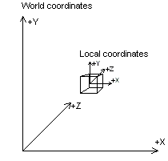

The world transformation changes coordinates from model space, where vertices are defined relative to a model's local origin, to world space, where vertices are defined relative to an origin common to all the objects in a scene. In essence, the world transformation places a model into the world; hence its name. The following diagram illustrates the relationship between the world coordinate system and a model's local coordinate system.

The world transformation can include any combination of translations, rotations, and scalings.